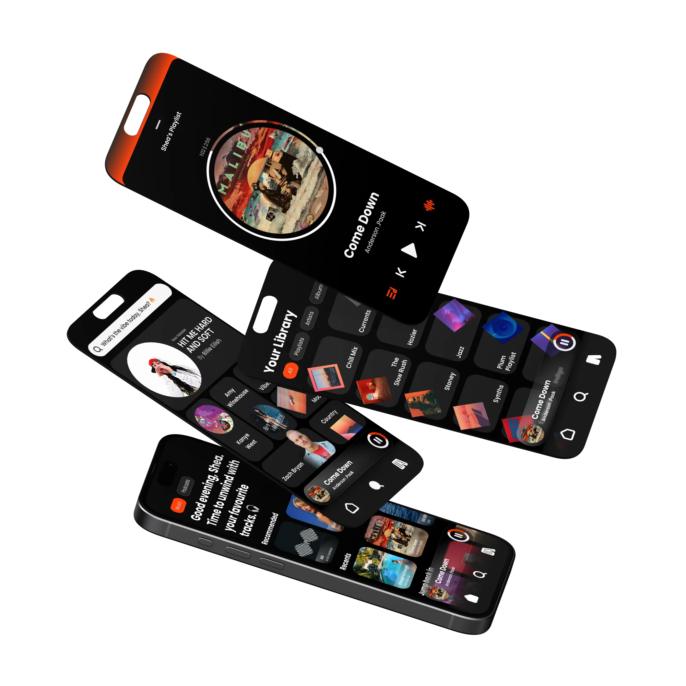
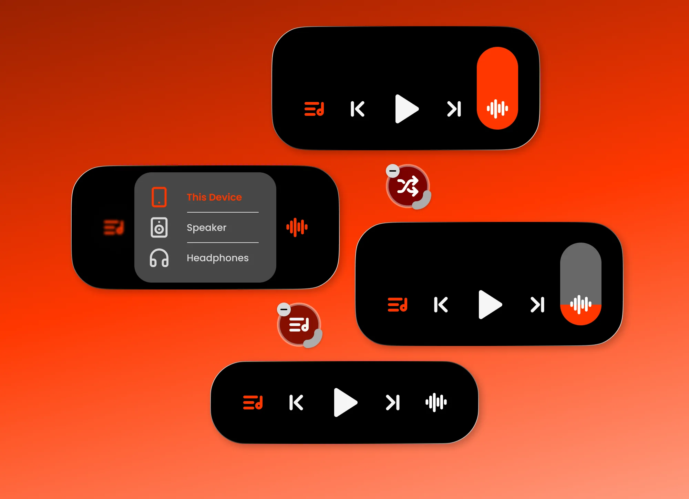
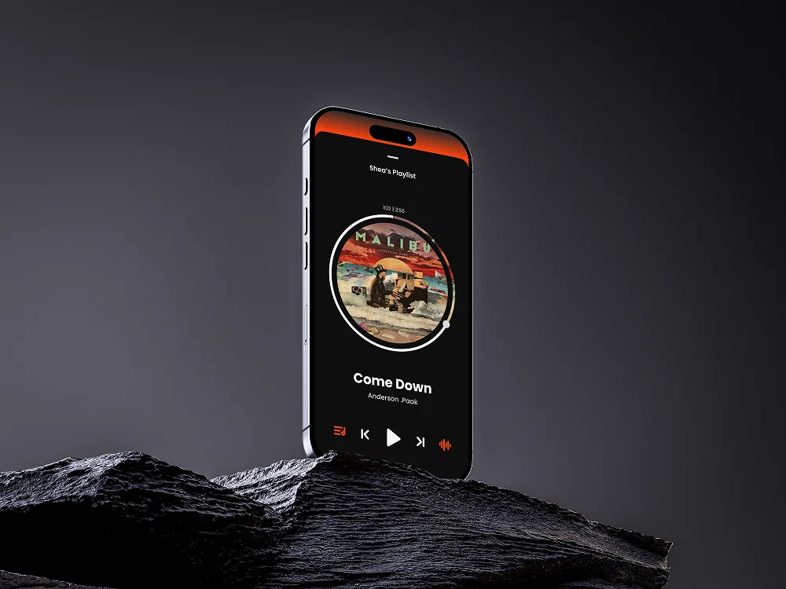
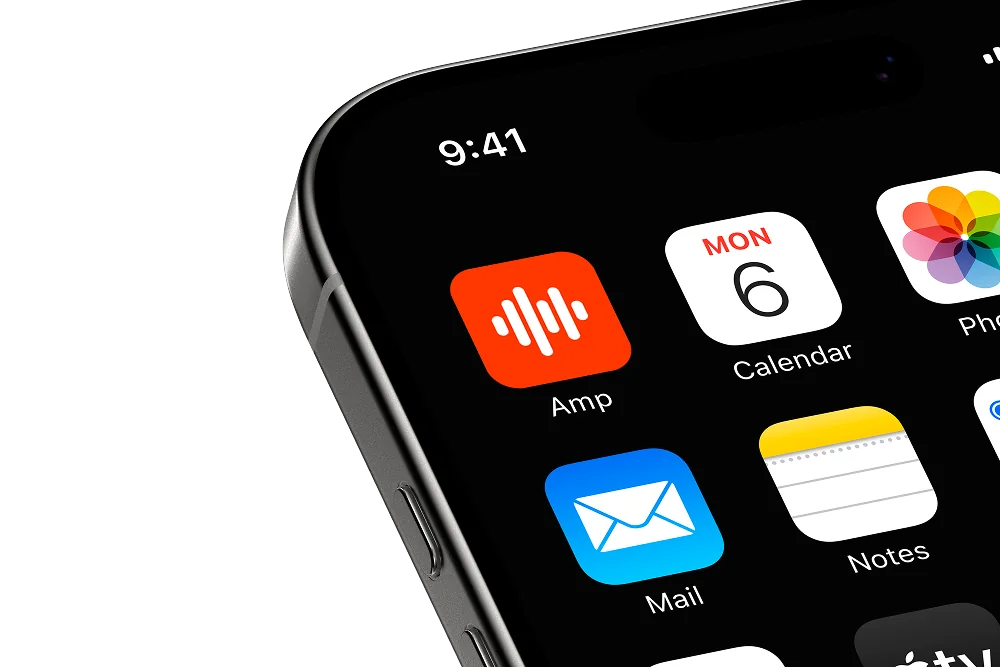

Apple Watch appConcept
Captr
Capture a task, give it a priority and tick it off from your wrist.

Music, the way it should feel.

Overview
A music player built to feel bold and personal. Dark UI, orange accent, and glassmorphism elements I was experimenting with around the time the iOS Liquid Glass rumours started. The core idea was rethinking how you control sound on your phone.
One control that does a lot. Swipe up or down for volume and the slider comes to your finger, not the other way round. Hold for precision. Tap once and it shows every nearby device, picking between AirPlay, Bluetooth and other wireless connections to find the best one automatically. Long hold to customise which actions live there, the same way iOS lets you rearrange Control Centre.

Album art sits at the centre of the player as a circle, with a progress ring running around the edge. Drag the handle to scrub through the track. Glassmorphic surfaces pull colour from the artwork underneath, so each track feels a bit different. The home screen also greets you differently depending on the time of day.

Spotify owns green. Apple Music owns a reddy pink. Orange was just sitting there. It felt confident without being loud, and it stood out on a home screen next to everything else. The icon keeps it simple: a soundwave on vivid orange.

Next project
Capture a task, give it a priority and tick it off from your wrist.